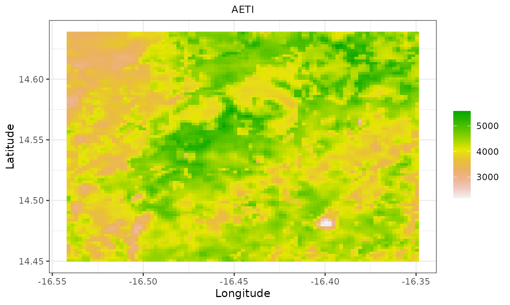
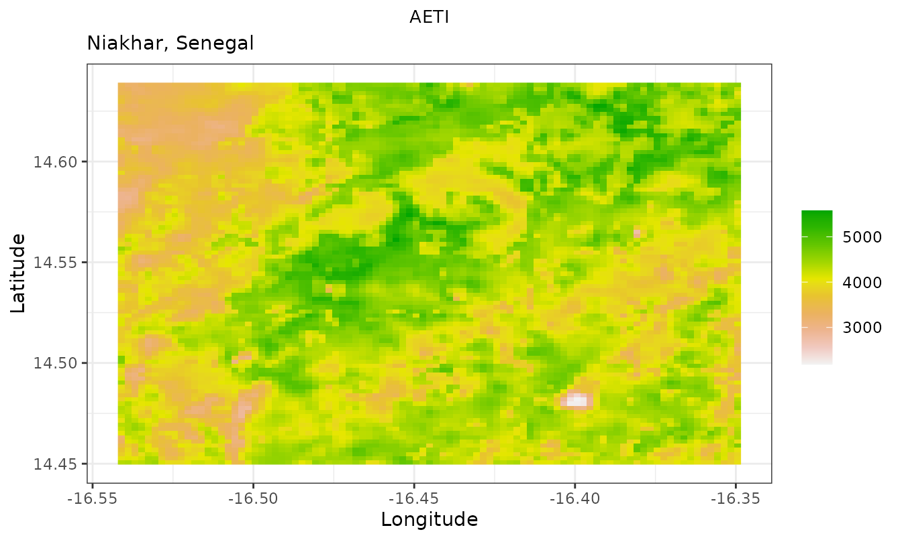
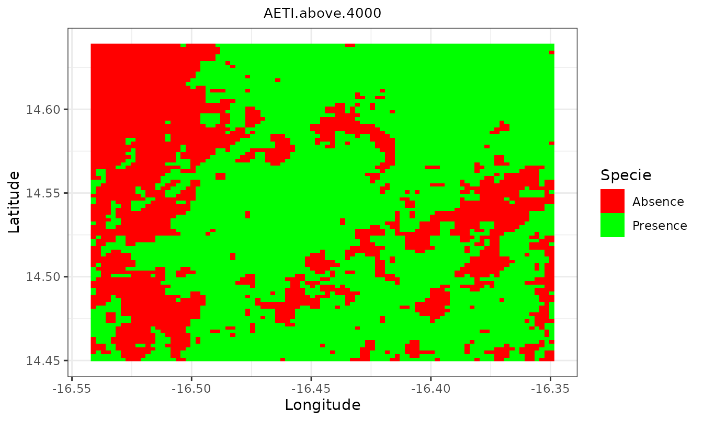
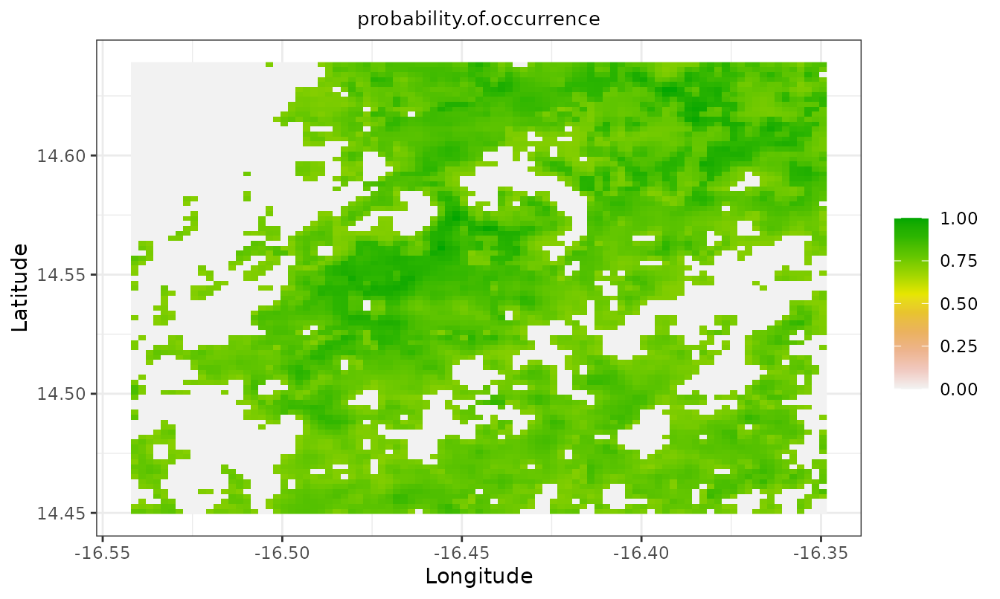

Introduction
sdmApp is an R package containing a Shiny application
that lets non-expert R users model species distribution. It brings a
reproducible workflow for species distribution modeling into a single,
user friendly environment. sdmApp takes raster data (in any
format supported by the raster package) and species
occurrence data (several formats supported) as input, and provides an
interactive graphical user interface (GUI).
This vignette has two parts. The first shows the small set of mapping
helpers that sdmApp exports, using the example data bundled
with the package, so that you can reproduce every figure below on your
own machine. The second describes the graphical interface and the data
it expects.
The main features of the GUI are:
- uploading data (raster predictors and species occurrence files);
- viewing the correlation between raster predictors;
- using CENFA to select species predictors;
- applying spatial blocking for cross-validation, based on the blockCV package;
- fitting species distribution models with or without a spatial blocking strategy;
- exporting results;
- staying reproducible by downloading the underlying R code.
The GUI is built around five main windows, selectable from the navigation bar at the top of the screen. Some of these windows start empty and fill in once raster and species occurrence data have been uploaded.
Installation
sdmApp is not currently on CRAN, so install it from
GitHub. CENFA is also off CRAN and must be installed
first.
# install.packages("remotes")
remotes::install_github("rinnan/CENFA")
remotes::install_github("Abson-dev/sdmApp", dependencies = TRUE)To use the MaxEnt model you additionally need a Java JDK (>= 8),
the rJava package, and the maxent.jar file
placed in the java directory of the dismo
package, which you can locate with:
system.file("java", package = "dismo")Everything shown in this vignette works without Java.
Launching the interface
A single call starts the application in your browser:
sdmApp()sdmApp() accepts a few arguments.
maxRequestSize sets the largest upload accepted, in
megabytes. theme selects the style sheet, one of
"IHSN" (the default), "yeti",
"journal" or "flatly". Setting
shiny.server = TRUE returns the application as an object
rather than launching it, which is what you want when deploying behind
shiny-server.
# accept uploads up to 200 MB and use the flatly theme
sdmApp(maxRequestSize = 200, theme = "flatly")
# return the app object instead of running it
app <- sdmApp(shiny.server = TRUE)Before starting, sdmApp() checks that the modelling
engines it relies on are installed, and stops with a message naming any
that are missing. This avoids a cryptic failure halfway through a
session.
The bundled example data
The package ships a small extract of the Niakhar study area in Senegal.
Occurrence data
Niakhar.csv holds 9258 georeferenced trees scored for
three species, Faidherbia albida, Balanites aegyptiaca
and Anogeissus leiocarpus (Ndao et al., 2019). The same table
is also provided as .xlsx, .dta,
.sav and .sas7bdat so that you can practise
uploading each format through the GUI.
The file is semicolon separated and uses a comma as decimal mark, so
it must be read with read.csv2() rather than
read.csv().
occ_file <- system.file("extdata", "Niakhar.csv", package = "sdmApp")
occ <- utils::read.csv2(occ_file)
str(occ)
#> 'data.frame': 9258 obs. of 5 variables:
#> $ X_WGS84 : num -16.4 -16.4 -16.4 -16.4 -16.4 ...
#> $ Y_WGS84 : num 14.6 14.6 14.6 14.6 14.6 ...
#> $ Faidherbia.albida : int 1 1 1 1 1 1 1 0 0 0 ...
#> $ Balanites.aegyptiaca : int 0 0 0 0 0 0 0 0 0 1 ...
#> $ Anogeissus.leiocarpus: int 0 0 0 0 0 0 0 0 0 0 ...The first two columns are longitude and latitude in WGS 84. The remaining three are binary presence indicators, one per species.
colSums(occ[, 3:5])
#> Faidherbia.albida Balanites.aegyptiaca Anogeissus.leiocarpus
#> 3872 1017 810For any spatial work, turn the table into an sf object.
The bundled rasters are in geographic coordinates, so no reprojection is
needed.
pa_data <- sf::st_as_sf(occ, coords = c("X_WGS84", "Y_WGS84"), crs = 4326)
pa_data[1:3, ]
#> Simple feature collection with 3 features and 3 fields
#> Geometry type: POINT
#> Dimension: XY
#> Bounding box: xmin: -16.36178 ymin: 14.6336 xmax: -16.36167 ymax: 14.63375
#> Geodetic CRS: WGS 84
#> Faidherbia.albida Balanites.aegyptiaca Anogeissus.leiocarpus
#> 1 1 0 0
#> 2 1 0 0
#> 3 1 0 0
#> geometry
#> 1 POINT (-16.36169 14.6336)
#> 2 POINT (-16.36178 14.63363)
#> 3 POINT (-16.36167 14.63375)Environmental variables
The package bundles 34 raster predictors relating to bioclimatic drivers, soil properties, water productivity, vegetation phenology and productivity and watershed topography. In the original study the predictors were set on a common projection (WGS 84, UTM zone 28N), cropped to a common extent and resampled to a common resolution of 250 m. The extract distributed with the package is aligned on a common grid of 93 by 91 cells in geographic coordinates (EPSG:4326).
files <- list.files(
system.file("extdata", package = "sdmApp"),
pattern = "\\.tif$", full.names = FALSE
)
length(files)
#> [1] 34
head(files, 10)
#> [1] "AETI.tif" "bio1.tif" "bio10.tif" "bio11.tif" "bio12.tif" "bio13.tif"
#> [7] "bio15.tif" "bio16.tif" "bio17.tif" "bio18.tif"Load one of them, the actual evapotranspiration and interception layer:
r <- raster::raster(system.file("extdata", "AETI.tif", package = "sdmApp"))
r
#> class : RasterLayer
#> dimensions : 91, 93, 8463 (nrow, ncol, ncell)
#> resolution : 0.002083333, 0.002083333 (x, y)
#> extent : -16.54214, -16.34839, 14.44958, 14.63916 (xmin, xmax, ymin, ymax)
#> crs : +proj=longlat +datum=WGS84 +no_defs
#> source : AETI.tif
#> names : AETI
#> values : 2182.308, 5578.13 (min, max)Bioclimatic variables
Bioclimatic variables are derived from monthly temperature and rainfall values to produce more biologically meaningful predictors. They capture annual trends (mean annual temperature, annual precipitation), seasonality (annual range in temperature and precipitation) and extreme or limiting factors (temperature of the coldest and warmest month, precipitation of the wettest and driest quarters). They were extracted from the WorldClim database version 2 and are averages for the years 1970 to 2000 (Fick and Hijmans, 2017).
Soil properties
Seven soil property variables come from the ISRIC World Soil Information portal, produced by the Africa Soil Information Service (AfSIS) project. More than 85 thousand samples, from over 28 thousand sampling locations and covering 1950 to 2012, were used for the spatial predictions (Hengl et al., 2015).
Water productivity
Two water productivity variables were retrieved from the FAO WaPOR database. Net biomass water productivity (NBWP) expresses total biomass production in relation to the volume of water beneficially consumed through canopy transpiration over the year, net of soil evaporation. Actual evapotranspiration and interception (AETI) is the sum of soil evaporation, canopy transpiration and interception, that is the rainfall intercepted by leaves and evaporated directly from their surface (FAO, 2020). Both are agrometeorological variables useful for monitoring how effectively vegetation converts water into biomass (NBWP) and for analysing the soil-air interface and plant functioning (AETI).
Vegetation phenology and productivity
Agroforestry systems are landscapes shaped by interactions between crops, trees and cropping practices. Two phenological metrics related to the cropping season were therefore included, derived from 16-day MODIS NDVI time series (MOD13Q1) using the TIMESAT software (Eklundh and Jonsson, 2011).
Watershed topography
Topographic variables were derived with the Soil and Water Assessment Tool (SWAT) from the 30 m NASA SRTM digital elevation model. The SWAT watershed delineator was used to extract 69 sub-basins within the study area, in a vector file whose attribute table carries the topographic variable values (Winchell et al., 2010).
Working with the exported functions
sdmApp exports four functions besides the launcher. They
are deliberately small: each takes a raster (or a set of folds) and
returns a ggplot object that you can further customise with
the usual ggplot2 grammar.
Plotting a continuous raster
sdmApp_RasterPlot() samples the layer on a regular grid,
so it stays fast on large rasters, and draws it with a terrain colour
ramp.

Because the result is an ordinary ggplot object, you can
adjust it:
sdmApp_RasterPlot(r) +
ggplot2::labs(subtitle = "Niakhar, Senegal")
Plotting a presence/absence surface
sdmApp_PA() expects a binary raster and maps absence in
red and presence in green. Here we threshold the AETI layer to build
one.

Masking a probability surface
A species distribution model produces a probability of occurrence
surface. sdmApp_TimesRasters() multiplies it by a
presence/absence surface, so that only the cells predicted as presence
keep their probability. The name of the first raster is carried over to
the result.
prob <- r / raster::cellStats(r, "max")
names(prob) <- "probability of occurrence"
masked <- sdmApp_TimesRasters(prob, pa)
names(masked)
#> [1] "probability.of.occurrence"
sdmApp_RasterPlot(masked)
Every exported function validates its inputs, so a mistake fails
early and with a readable message rather than deep inside
ggplot2:
sdmApp_TimesRasters(1, 2)
#> Error:
#> ! 'x' and 'y' must both be Raster* objects.Exploring spatial cross-validation folds
Random splits of spatially structured data give over-optimistic error
estimates (Telford and Birks, 2009; Roberts et al., 2017).
sdmApp relies on blockCV to build spatially
separated folds, and sdmApp_fold_Explorer() draws the
training and testing points of a chosen fold on top of a background
raster.
library(blockCV)
sb <- spatialBlock(
speciesData = pa_data["Faidherbia.albida"],
species = "Faidherbia.albida",
rasterLayer = r,
theRange = 2000,
k = 5,
selection = "random",
iteration = 100
)
sdmApp_fold_Explorer(sb, r, pa_data["Faidherbia.albida"], num = 1)Note a compatibility caveat. From blockCV version 3.0,
spatialBlock() is deprecated in favour of
cv_spatial(), and the object returned by
cv_spatial() is no longer of class
SpatialBlock. sdmApp_fold_Explorer() currently
tests for that class, so it works with the deprecated
spatialBlock() but not yet with cv_spatial().
Support for the new class is planned.
A typical session in the GUI
The navigation bar exposes five tabs, which are meant to be visited in order.
- Help/About gives a short description of the application and of the modelling options.
- Data Upload takes the raster predictors and the species occurrence file. Occurrence data can be supplied as CSV, Excel, Stata, SPSS or SAS. Nothing else in the interface is populated until this step succeeds.
-
Spatial Analysis covers predictor screening. You
can inspect the correlation matrix between predictors, run an ecological
niche factor analysis with
CENFAto rank predictors by their contribution to marginality and specialisation, estimate the range of spatial autocorrelation, and build spatial blocks for cross-validation. - Modeling fits the models. Bioclim, Domain, Mahalanobis, GLM, MaxEnt, random forest and support vector machines are available, with or without a spatial blocking strategy, and results can be exported as rasters and tables.
- R-Code returns the R code corresponding to the session, so the analysis can be rerun, version controlled and shared.
A reasonable workflow is therefore: upload, drop strongly correlated
predictors, select predictors with CENFA, choose a block
size informed by the spatial autocorrelation range, generate folds, fit
one or more models, compare them, then export both the maps and the R
code.
Session information
sessionInfo()
#> R version 4.6.1 (2026-06-24)
#> Platform: x86_64-pc-linux-gnu
#> Running under: Ubuntu 24.04.4 LTS
#>
#> Matrix products: default
#> BLAS: /usr/lib/x86_64-linux-gnu/openblas-pthread/libblas.so.3
#> LAPACK: /usr/lib/x86_64-linux-gnu/openblas-pthread/libopenblasp-r0.3.26.so; LAPACK version 3.12.0
#>
#> locale:
#> [1] LC_CTYPE=C.UTF-8 LC_NUMERIC=C LC_TIME=C.UTF-8
#> [4] LC_COLLATE=C.UTF-8 LC_MONETARY=C.UTF-8 LC_MESSAGES=C.UTF-8
#> [7] LC_PAPER=C.UTF-8 LC_NAME=C LC_ADDRESS=C
#> [10] LC_TELEPHONE=C LC_MEASUREMENT=C.UTF-8 LC_IDENTIFICATION=C
#>
#> time zone: UTC
#> tzcode source: system (glibc)
#>
#> attached base packages:
#> [1] stats graphics grDevices utils datasets methods base
#>
#> other attached packages:
#> [1] sdmApp_0.0.3
#>
#> loaded via a namespace (and not attached):
#> [1] sass_0.4.10 generics_0.1.4 class_7.3-23 KernSmooth_2.23-26
#> [5] lattice_0.22-9 digest_0.6.39 magrittr_2.0.5 evaluate_1.0.5
#> [9] grid_4.6.1 RColorBrewer_1.1-3 fastmap_1.2.0 jsonlite_2.0.0
#> [13] e1071_1.7-17 DBI_1.3.0 promises_1.5.0 scales_1.4.0
#> [17] codetools_0.2-20 textshaping_1.0.5 jquerylib_0.1.4 shiny_1.14.0
#> [21] cli_3.6.6 rlang_1.3.0 units_1.0-1 cowplot_1.2.0
#> [25] withr_3.0.3 cachem_1.1.0 yaml_2.3.12 otel_0.2.0
#> [29] tools_4.6.1 raster_3.6-32 dplyr_1.2.1 ggplot2_4.0.3
#> [33] httpuv_1.6.17 mime_0.13 vctrs_0.7.3 R6_2.6.1
#> [37] proxy_0.4-29 lifecycle_1.0.5 classInt_0.4-11 fs_2.1.0
#> [41] htmlwidgets_1.6.4 ragg_1.5.2 pkgconfig_2.0.3 desc_1.4.3
#> [45] later_1.4.8 pkgdown_2.2.1 terra_1.9-34 pillar_1.11.1
#> [49] bslib_0.11.0 gtable_0.3.6 glue_1.8.1 Rcpp_1.1.2
#> [53] sf_1.1-1 systemfonts_1.3.2 xfun_0.60 tibble_3.3.1
#> [57] tidyselect_1.2.1 knitr_1.51 xtable_1.8-8 farver_2.1.2
#> [61] htmltools_0.5.9 labeling_0.4.3 rmarkdown_2.31 compiler_4.6.1
#> [65] S7_0.2.2 sp_2.2-1References
Bahn, V., McGill, B.J. (2012). Testing the predictive performance of distribution models. Oikos, 122(3), 321-331.
Eklundh, L., Jonsson, P. (2011). TIMESAT 3.0 Software Manual. Lund University, Sweden.
FAO (2020). WaPOR database methodology. Food and Agriculture Organization of the United Nations, Rome.
Fick, S.E., Hijmans, R.J. (2017). WorldClim 2: new 1 km spatial resolution climate surfaces for global land areas. International Journal of Climatology, 37(12), 4302-4315.
Hastie, T., Tibshirani, R., Friedman, J. (2009). The Elements of Statistical Learning: Data Mining, Inference, and Prediction, 2nd edition. Springer, New York.
Hengl, T., Heuvelink, G.B.M., Kempen, B., et al. (2015). Mapping soil properties of Africa at 250 m resolution: random forests significantly improve current predictions. PLoS ONE, 10(6), e0125814.
Hiemstra, P.H., Pebesma, E.J., Twenhofel, C.J., Heuvelink, G.B. (2009). Real-time automatic interpolation of ambient gamma dose rates from the Dutch radioactivity monitoring network. Computers and Geosciences, 35(8), 1711-1721.
Ndao, B., Leroux, L., Diouf, A.A., Soti, V., Sambou, B. (2019). A remote sensing based approach for optimizing sampling strategies in crop monitoring and crop yield estimation studies. In: Wade, S. (Ed.), Earth Observations and Geospatial Science in Service of Sustainable Development Goals. Springer, pp. 25-36. doi:10.1007/978-3-030-16016-6_3
O’Sullivan, D., Unwin, D.J. (2010). Geographic Information Analysis, 2nd edition. John Wiley and Sons.
Phillips, S.J., Anderson, R.P., Dudik, M., Schapire, R.E., Blair, M.E. (2017). Opening the black box: an open-source release of Maxent. Ecography, 40(7), 887-893.
Rinnan, D.S., Lawler, J. (2019). Climate-niche factor analysis: a spatial approach to quantifying species vulnerability to climate change. Ecography, 42, 1494-1503. doi:10.1111/ecog.03937
Roberts, D.R., Bahn, V., Ciuti, S., et al. (2017). Cross-validation strategies for data with temporal, spatial, hierarchical, or phylogenetic structure. Ecography, 40(8), 913-929.
Telford, R.J., Birks, H.J.B. (2009). Evaluation of transfer functions in spatially structured environments. Quaternary Science Reviews, 28(13), 1309-1316.
Valavi, R., Elith, J., Lahoz-Monfort, J.J., Guillera-Arroita, G. (2019). blockCV: An R package for generating spatially or environmentally separated folds for k-fold cross-validation of species distribution models. Methods in Ecology and Evolution, 10, 225-232. doi:10.1111/2041-210X.13107
Winchell, M., Srinivasan, R., Di Luzio, M., Arnold, J. (2010). ArcSWAT Interface for SWAT2009: User’s Guide. Texas Agricultural Experiment Station, Texas.